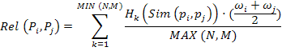
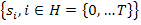

vol. 14 no. 2, June, 2009
vol. 14 no. 2, June, 2009 | ||||
Nowadays, one of the most relevant challenges information systems have to face is achieving accurate information retrieval. It is becoming necessary to develop tools and mechanisms to effectively manage the large volume of resources and rationalize Web users' access to information that interests them. This problem becomes even more critical for the academic and research community because of the intrinsic characteristics of the scientific literature and the specific information needs of its users (Palmer et al. 2009).
Traditionally, academic libraries have been the main point of access to scientific information for the university community (especially when developed on a digital platform). Many of them also offer their users filtering and recommender services (Geisler et al. 2001; Huang et al. 2002) to ease the task of selecting relevant documents that fit their requirements (usually defined in a personal user profile) (Kuflik and Shoval 2000).
Nevertheless, most recommender systems only suggest resources fitting user’s needs (i.e., a set of resources that enable users to deepen their knowledge in a specific domain), but rarely take into account different approaches. For instance, it is quite usual for researchers to look for documents in domains different from the one they are interested in (although related to it in a certain degree), so that they are able to open new research lines or create interdisciplinary working groups. Obviously, in this case the recommendation generated by the system should be appreciably different to that in their usual profile.
In this work we propose a system capable of working with several recommending policies (i.e., those policies that define the parameters for recommendations made by the system) through the joint application of different technological solutions, which tackle the problem of efficiently accessing information. The system is based on a multi-agent platform, where several software agents actively process and exchange information with another agents in the Web (Hendler 2001; Maes 1994), and also assist users in information retrieval tasks (Brenner et al. 1998; Fazlollahi et al. 2000; Jennings 1998).
However, because information can be represented in heterogeneous ways on the Web, the main handicap multi-agent systems have to face is finding a communication protocol agile and flexible enough to ease communication among agents and between agents and users. The application of fuzzy linguistic techniques can help us to tackle these communication problems through the definition of linguistic tags (Zadeh 1975a, 1975b, 1975c) that allow representing qualitative phenomena from a quantitative approach.
Additionally, we propose using Semantic Web technologies (Berners-Lee et al. 2001) as common syntactic and data model framework for representing information and enabling software agents to access and process resources at a semantic level.
As users’ information requirements are becoming more and more specific and complex (Marchionini 2000), digital libraries have to make an extra effort to provide users with more and better services. One way to satisfy this objective is by developing value-added services, which allow customizing and easing the access of users to content of interest. Among these services we can find, for example, content syndication (Kraft et al. 2008) and filtering and recommendation services (Huang et al. 2002).
Lately, and mainly thanks to the popularisation of Weblogs, there has arisen the need for mechanisms to publish and spread new content quickly. Syndication services fulfil this objective by providing individuals with easy access to the content of a Website of interest without having to visit that specific site. This is achieved by means of hyperlink lists called feeds or channels that can be defined using simple mark-up vocabularies, such as Atom (Nottingham 2005) or RSS (Really Simple Syndication, Rich Site Summary or RDF Site Summary) in any of its versions (RSS history 2007). The structure of these feeds consists of two elements: the first where the channel is described by a series of basic metadata, and the second where different information items (which represent the Web resources to be diffused) are defined.
On the other hand, filtering and recommendation services are based on the application of different techniques that manage a series of processes that are oriented to provide users just the information that meets their needs or is of interest to them. In textual domains these services are usually developed using multi-agent systems (among others) to meet these objectives:
Traditionally, these systems are classified in two main categories (Popescul et al. 2001): content-based and collaborative recommendation systems. Content-based recommendation systems filter information and generate recommendations by comparing a set of keywords defined by the user with the terms that represent the content of documents, ignoring any information given by other users. On the other hand, collaborative filtering systems use the information provided by several users to recommend documents to a specific user, ignoring the different ways the content is represented. The current trend is to develop hybrid systems that deploy the advantages of both approaches.
In libraries, these services usually take the form of Selective Dissemination of Information services which, depending on the profile of subscribed users, periodically (or when required by the user) generate a series of information alerts which notify them of the resources in the library that fit their interests (Aksoy et al. 1998; Foltz and Dumais 1992).
Selective dissemination of information services have been studied in different research areas, such as the multi-agent systems development domain (Decker et al. 1997; Kuokka and Harada 1995) and, of course, in the digital libraries domain (Faensen et al. 2001). At the present day, many of these services are implemented through Web platforms based on a multi-agent architecture where there is a set of intermediate agents that compare user’s profiles with the documents, and different input-output agents that deal with subscriptions to the service and display generated alerts to users (Altinel and Franklin 2000; Yan and García-Molina 1999). Usually, the information is structured according to a certain data model, and users’ profiles are defined using a series of keywords that are compared to descriptors or to the full text of documents.
Despite their usefulness, these services have some deficiencies:
A possible solution to these deficiencies consists in enriching information representation using a common vocabulary and data model that are understandable by humans as well as by software agents. The Semantic Web project (Berners-Lee, Hendler and Lassila 2001) uses the idea of information comprehensible to humans and agents and provides the means to develop a universal platform for the exchange of information.
The Semantic Web (Berners-Lee 2000) tries to extend the model of the present Web using a series of standard languages that enable the description of Web resources to be enriched so that they become semantically accessible. To do this, the Semantic Web is based on two fundamental ideas: i) semantic tagging of resources, so that information can be understood both by humans and computers, and ii) the development of intelligent agents (Hendler 2001) capable of operating at a semantic level with those resources and infer new knowledge from them (in this way it is possible to shift from keyword search to the retrieval of concepts).
The semantic backbone of the project is the Resource Description Framework vocabulary (Becket 2004), which provides a data model to represent, exchange, link, add and re-use structured metadata of distributed information sources and, therefore, make them directly understandable by software agents. The resource description framework structures the information into individual assertions (resource, property, and property value triples) and uniquely characterises resources by means of Uniform Resource Identifiers, allowing agents to make inferences about them using Web ontologies (Gruber 1995; Guarino 1998; ) or to work with them using simpler semantic structures like conceptual schemes or thesauri.
As we can see, the Semantic Web basically works with information written in natural language (although structured in a way that can be interpreted by machines). For this reason, it is usually difficult to deal with problems that require operating with linguistic information that has a certain degree of uncertainty (such as, for instance, when quantifying the user’s satisfaction in relation to a product or service). A possible solution could be the use of fuzzy linguistic modelling techniques as a tool for improving the communication between system and user. The formal description of such a model is presented in the Appendix.
With all the instrumental tools described, in this paper we propose developing a selective dissemination of information service for digital libraries whose target population is the research community. This service is known as D-Fussion. This model has been developed as an improvement on the multi-agent information retrieval and filtering system (Herrera-Viedma et al. 2007). Upon that basic infrastructure we propose defining a service that delivers current awareness bulletins that briefly describe resources recently acquired by the library or that are potentially interesting for users. We have also simplified the previous model defining only three software agents (interface, task and information agents), which are distributed in a five-level hierarchical architecture:
The underlying semantics of the different elements that make up the system (i.e., their characteristics and the semantic relations defined among them) are defined through several interoperable Web ontologies described using the OWL vocabulary (McGuinness and van Harmelen 2004).
As we have commented before, a given recommender system will provide recommendations about a specific resource according to the opinions given about that resource by different experts with a profile similar to that of the active user (if it is a collaborative recommender system) or according to the similarity of the resource to other resources assessed by the active user (in the case of content-based recommender systems).
To measure the likeness among profiles or resources we can find many similarity functions such as Salton’s cosine (Salton 1971; Salton et al. 1975), Dice coefficient (van Rijsbergen 1979) or Jaccard coefficient (Rorvig 1999; Jaccard 1912), to mention a few. Traditionally, in recommender systems similarity functions are interpreted in a linear way, i.e., the higher the similarity measure of a resource or profile is, the more likely it is to generate a recommendation. This is what we have called the mono-disciplinary approach since it lets users deepen their knowledge in a specific area.
Nevertheless, it is quite common (and almost a requirement) for researchers to keep the track of new developments and advances in other fields, related to their specialization domain. In this way, it is possible for them to widen their research scope, open new research lines and create multidisciplinary work groups.
In such circumstances, users need recommendations about resources whose topics are related to (but do not exactly fit) their preferences, but without modifying their profile at all. In this case it makes sense to consider as relevant an interval of mid-range similarity values instead of those close to one (i.e., both extremely similar and dissimilar similarity values are discarded).
So it would be necessary to define some kind of center function (Yager 2007) that enables us to constrain the range of similarity values we are going to consider as relevant. In our model, the interpretation of similarity is defined by a Gaussian function µ as the following:
where Sim (pi, pj) is the similarity measure among the resources pi and pj , and k represents the centre value around which similarity is relevant to generate a recommendation (in this case k=0’5).
We have defined four basic component elements in this model: a thesaurus, a user profile repository, a full-text documents repository, and one or several RSS feeds. Let us consider each element in more detail.
Thesauri are widely-used in traditional libraries for describing and accessing resources. Thesauri are quite similar to ontologies since is possible to define a hierarchical structure for a set of relevant concepts pertaining to a specific knowledge domain by making explicit the semantic relationships among these concepts (basically equivalence, hierarchical and associative relations).
Although ontologies are much more expressive than thesauri, in this model we have chosen to use a thesaurus to represent the work domain of the digital library, because requirements defined for this model allow us to use a simple concept scheme, such as a thesaurus which is much easier to develop and maintain than an ontology. In our model, component terms of the thesaurus define the expression domain of both the topic terms of RSS items and users’ preferences.
This thesaurus has been defined using SKOS (Simple Knowledge Organization System) (Isaac and Summers 2008), a mark-up language that allows the migration of a paper thesaurus to the Web. As a semantic vocabulary, the enriched metadata description it provides allows us to equate thesauri with light-weight Web ontologies and eases importing and merging different thesaurus from other digital libraries.
User profiles can be defined as structured representations that contain personal data, interests and preferences of users, which can be processed by software agents to customise the service to users' requirements. In our model these profiles are basically defined with FOAF (Friend of a friend) (Brickley and Miller 2005), a specific RDF/XML vocabulary for describing people, and a non-standard vocabulary of our own to define information fields not included in FOAF.
Profiles are generated at the moment the user is registered in the system, and they are structured in four parts: a public profile that includes data related to users' identity and institutional affiliation (which can be accessed by other users); a private profile that holds the user’s interests and preferences about the topic of the alerts they wish to receive; a security profile that store a user ID and a password; and a recommendations log, which records the assessments made by the user about different resources.
To create the current awareness bulletins we have chosen RSS 1.0 (RDF Site Summary) (Beged-Dov et al. 2001), a vocabulary that allows managing hyperlinks lists in an easy and flexible way. It uses the RDF/XML syntax and data model, and it is easily extensible thanks to the use of modules that allow extending the vocabulary without modifying its core each time we want to add new describing elements. In this model several modules are used: the DC module, to describe the basic bibliographic information of RSS items utilising Dublin Core Metadata Initiative elements (Dublin Core Metadata Initiative 2008), the syndication module to allow software agents to synchronise and update RSS feeds, and the taxonomy module to assign topics to items.
The system has access to a full-text documents repository (i.e., the stock of the digital library) although agents in the system do not process them directly because most of them are in HTML or PDF format and they lack appropriate metadata. Therefore, in our model, agents have to work with surrogates instead, i.e., RSS items which include basic bibliographic data, a set of topic terms and a hyperlink to their corresponding full-text document.
The following modules carry out the different functions and activities defined for D-Fussion:
It should be noted that the way these modules accomplish their assigned tasks is not recommendation approach dependent. Choosing one approach or another only affects the interpretation of the outcomes obtained in both information push and collaborative recommendation modules. Next, we describe in detail the above enumerated modules.
As stated above, in this module we can differentiate two sub-modules (although they both basically function in a similar way): User profiles generation and RSS feeds generation.
In the User profiles generation sub-module, users are asked to fill in a form where they must specify a set of basic personal data that will be stored in their public profile, before a login and password are given to grant secure access to the library. Both of these are stored in the security profile.
Subsequently, users are required to define their interests or preferences. To do so, users must specify those keywords or concepts that best define their information needs. Later, the system lexically compares those concepts with the terms of the thesaurus using as similarity measure the edit tree algorithm (Levenshtein 1966). This function compares character strings and returns the same term introduced when there is an exact match, or the term lexically similar to the given term if there is no exact match. If the suggested term satisfies a user’s expectations, it will be added to their profile. In those cases where the suggested term is not satisfactory, the system must provide alternative ways to define preferences. We propose to use an application that enables users to browse the system thesaurus and select terms by themselves. An example of this type of applications is ThManageri, a project of the University of Zaragoza (Spain), which allows editing, visualizing, and going through structures defined in SKOS.
Each of the terms selected by users to define their areas of interest has an associated linguistic weight value (tagged as <relev>). This represents the degree of interest of the user about a specific topic and allows the interface agent to generate a ranking list of recommended resources.
Defining weights is a fundamental task for several reasons:
The range of possible values for these weights is defined by a group of seven linguistic labels extracted from the fuzzy linguistic variable Relevance degree, whose expression domain is defined by the linguistic term set S={null, very low, low, middle, high, very high, total}.
The recommendations log area of the profiles is not generated in this module but in the feedback module (as described in a next section).
In the RSS feeds generation sub-module, system administrators or site managers can create and update the RSS feeds of the system in a semi-automatic way through an interface where they can input the different elements needed to describe both the RSS channel and its items. The description of the channel is static (i.e., is not susceptible to changes) and includes a title, a brief summary of the content and frequency with which items are updated. Description of the items is continually renewed, deleting out-of-date items and adding new ones according to the updating frequency defined in the channel description. To do so, the task agent periodically checks the document repository seeking for documents that have not yet been described, but that are RSS items. Once these documents have been located, information agents are responsible for extracting the data needed to generate their description from a Web information source (such as, for instance, a database or a public access repository). Then, the task agent proceeds to generate the description of the items by defining a title, an author, a content summary and a link to the primary resource.
If the data provided by information agents is wrong or incomplete, system managers are responsible for correcting or completing them. Nevertheless, there must always be a careful human supervision (carried out by system managers) of the assignment of topics terms that describe the content of any resource. To ease this task, we use a tool that helps in the process of assigning topics to the items. It works in an analogous way to the preference selection process in the User profiles generation sub-module: the administrator suggests a series of terms that are matched with the terms of the thesaurus using the edit tree algorithm and the matched terms will be assigned as topic terms. Here, the system suggests a series of lexically similar terms that site managers can use or not, depending on their own criterion.
Selective dissemination of information service performance is based on generating passive queries to RSS feeds about the preferences stored in the user’s profile without the need of an explicit request from the user (an information delivery technique known as information push). In such a way, users are alerted to new resources fitting their information requirements without having to request them each time they access the system. This process is developed as follows:
Step 1: Users must provide their user-name and password in order to get authenticated access to the library.
Step 2: Once the user is identified the task agent proceeds to match the user's preferences with the content descriptors of the n items in the RSS feed, thus identifying those resources that fit the user's specific information needs. In this case, instead of using a lexical matching of the strings of both terms, the task agent measures their semantic similarity. To do this we use the semantic similarity function defined by Oldakowsky and Byzer (2005) which allows measuring the distance between two concepts in a taxonomy (or thesaurus) described as an RDF graph. This similarity is defined as follows:
The distance dc between two concepts represents the path to be followed to get from one to another through their closest common parent (ccp). This distance is measured as follows:
dc(c1, c2)= dc (c1, ccp) + dc(c2, ccp)
dc(c, ccp)= milestone (ccp) - milestone(c)where each concept in the taxonomy is assigned a marker or milestone. This marker can be measured by applying both a linear or exponential function (depending on the characteristics and requirements of our system). If we choose the linear function, the milestone is calculated as follows:
milestone (n) = 1 − [l (n) / l (N )]
where l(n) is the depth of the n node in the hierarchical structure and l(N) represents the deepest hierarchical level in the taxonomy. If we opt to use the exponential milestone then we have to apply the function defined by Zhong et al. (2002):
milestone (n) =1 / 2k l(n)
where k is a factor with a value of >1, which indicates the milestone ratio decrease as a term is deeper in the thesaurus tree structure. The value given for k factor depends on thesaurus depth.
Step 3: Once it has defined the similarity between preferences and topic terms, the system is able to measure the relevance of a resource regarding a specific user profile. To do this, we have defined the concept of semantic overlap, the aim of which is to ease the problem of measuring similarity using taxonomic operators. All concepts in a taxonomy are related to a certain degree, so the similarity between two of them would never reach 0 and we could find relevance values higher than 1.
The underlying idea in this concept is determining areas of maximum semantic intersection between concepts in a taxonomy. To clarify the concept, here is an example of measuring relevance between two user profiles (the procedure can be extrapolated to measure the relevance among resources or between profiles and resources).
Let P1 the profile of the active user to be matched with another user profile P2, where:
Pi= [p1, p2,…, pN] and Pj= [p'1, p'2, …, p'M]
being p1,...N and p'1,...,M the preferences defined in Pi and Pj respectively.
Graphically, we could represent preferences as simple closed curves with an area of one unit squared and the similarity between two terms as the intersection of their areas. According to these starting assumptions the following relevance function is defined:
where Hk is a function that obtains the k maximum similarity values between preferences pi and pj, ωi and ωj are the associated weights to pi and pj respectively (obviously, if we are comparing profiles and resources the weight associated to topic terms is zero), N is the number of preferences defined for pi and M the number of those defined for pj.
Although semantic overlap implies assuming a loss of information (that may not always be residual), using it improves the coherence of the system since the range of relevance values is restricted to the (0,1] interval.
Step 4. Once it has determined both similarity and relevance, the interface agent displays to the active user those items for which relevance is equal, or which overcome a predefined relevance threshold t (the value of which is near to 1), thus discarding those resources with lower relevance values. Then, selected items are sorted according to this relevance value which is expressed as a 2-tuple value (i.e., a linguistic label and an integer representing its symbolic translation).
Step 5. Finally, the interface agent generates a notification (displayed on the welcome page of the digital library) that notifies users that there are new resources fitting their information needs. This notification links to the listing of resources recommended by the system and allows user-imposing additional filtering constraints (such as selecting a specific document type) and accessing full-text documents. If there are no new items the user will also be alerted to this circumstance.
As we have noted, service performance is based on the definition of passive queries to RSS feeds about the preferences stored in the user’s profile without the need of an explicit request from the user (information push). Therefore, updating user profiles becomes a critical task since, although profiles are meant to store users’ long-term preferences, the system must be able to detect any subtle change in these preferences over time to provide accurate recommendations.
In our model, the profiles updating process is managed through a simple elicitation mechanism, which applies fuzzy linguistic techniques and exploits the feedback provided by users. Assuming the premises settled by the ordinal linguistic modelling theory we have developed a simple mechanism to update user profiles through the application of fuzzy linguistic techniques.
This mechanism is based on the updating of weights associated with preferences in a profile according to the satisfaction degree ej (defined by the user about a specific resource), which is extracted from the linguistic variable Satisfaction degree, and whose expression domain is S’= {null, very low, low, middle, high, very high, total}).
We have defined a matching function similar to those used to model threshold weights in weighted queries (Herrera-Viedma 2001). This function rewards the weights associated with preferences that match the topic terms present in assessed resources and penalises the weights if the assessment is not positive.
Nevertheless, the updating process will only be carried out in a preference with the maximum similarity value when matched with topic terms of an item. In this way, only the preference that has pushed the user to assess the resource in such a manner will be rewarded or penalised.
Therefore, the more resources the user assesses, the more precise the mechanism becomes, because it will be easier for the service to “learn” to select those documents that are likely to be more interesting for the user according to the preferences stored in their profile.
This evaluation process is not only useful for updating users’ profiles, but also (as we will see in the next section) for improving the system itself, as the feedback provided by the user can be re-used to create a collaborative recommendation system which can exploit the experience and knowledge of each user to benefit the whole community of users.
Let ej ∈S’ the degree of satisfaction, and ωili∈ S the weight associated to property i (in this case i= Preference) which value is l, then we define the updating function g: S′ x S → S:
where, (i) sa= ωili ; (ii) sb = ej ; (iii) a and b are indexes of linguistic labels whose value ranges from 0 and T (being T the cardinality of the set S minus one), and (iv) β is a bonus value defined as β=round(2|b-a|/T ) which rewards or penalizes the weight of preferences.
Each recommendation made by the user is also stored in the recommendation log area of their profile and the entries in the log are composed by the satisfaction degree ej , a URI that identifies the recommended resource, and a register date.
With this registry of assessments the system is able to function as a collaborative recommender system and generate recommendations according to the opinions of users with a similar profile.
Besides providing content-based recommendations by measuring similarity between resources and user profiles, the D-Fussion service yields collaborative recommendations based on the opinion suggested by other users of the library with a profile similar to that of the active user. The following steps give an overview of this process:
Additionally, if the system could get knowledge about the skill level of users or their typology (such as students, teachers or researchers) it could be possible to add new filtering features to improve collaborative recommendations. In this way, a user could be provided, for instance, with recommendations defined by other users with both similar interests and skills.
When D-Fussion provides users with an information alert it is possible for them to decide which recommendation approach (monodisciplinary or multidisciplinary) is the more appropriate at that point in time to satisfy their information needs. Depending on the approach selected, D-Fussion displays recommendations as a list of items with a title, an abstract and a hyperlink to the full-text document. Next to the item there are also displayed three different elements:
Figure 6 displays a screenshot of D-Fussion displaying a list of results according to the monodisciplinary approach.
To analyse the behaviour of the D-Fussion model interaction we have created a prototype system, which will evaluate its overall performance in terms of precision and recall. The main aim of this experiment is determining whether the system achieves the original goal of recommending useful resources to its users. We have chosen a random sample of twelve researchers in the field of Library and Information Science from the University of Granada.
The evaluation of this first version of D-Fussion has been based on a set of experiments designed to measure the capability of the system to recommend research resources that better fit users’ preferences. Nevertheless, although the system is able to provide both content-based and collaborative recommendations, the experiment is limited to the evaluation of the content-based recommendation module due to the lack of sufficient collaborative recommendations (that is, since the system is not fully implemented yet it suffers from cold start problem (Schein et al. 2002)).
In the field of filtering and recommender systems there is a set of well-known and widely-used measures of precision, recall and F1 that make possible assessing the quality of the generated recommendations (Cao and Li 2007; Cleverdon and Keen 1966; Sarwar et al. 2000). To calculate these metrics we need a contingency table to categorize the items according to users’ information needs (see Table 1).
| Recommended | Not recommended | Total | |
|---|---|---|---|
| Relevant | Nrs | Nrn | Nr |
| Irrelevant | Nis | Nin | Ni |
| Total | Ns | Nn | N |
Here we have classified the items in four basic categories: relevant suggested items (Nrs), relevant non-suggested items (Nrn), irrelevant suggested items (Nis) and irrelevant non-suggested items (Nin). We have also defined other categories to represent the sum of selected items (Ns), non-selected items (Nn), relevant items (Nr), irrelevant items (Ni), and the whole set of items (N). According to these categories we define the measures used in our experiment as follows:
Precision: It is defined as the ratio of selected relevant items to selected items, i.e., the probability of a selected item to be relevant.
Recall: It is defined as the ratio of selected relevant items to relevant items, i.e., the probability of a relevant item to be selected.
F1: It is defined as a combination metric that equals both the weights of precision and recall.
The goal of the experiment was to test the performance of D-Fussion in the generation of accurate and relevant recommendations for the users of the system (only considering the mono-disciplinary search).
We have focused on just one main category among the twelve top categories defined in the thesaurus, so at least one of the topics defined for relevant resources and one of the experts’ preferences must be semantically constrained to the same sub-domain within Library and Information Science. In this way we can achieve better terminological control overe subjects and preferences and extrapolate the output data for the whole thesaurus. In this case, the sub-domain selected is Archival science so the set of possible preference (and topic) values rises to ninety-six different concepts.
We considered an RSS feed with thirty items obtained from the E-LIS open access repository, finding only ten of them as semantically relevant (i.e., with at least one subject pertaining to the sub-domain Archival science), and a set of twelve experts who have defined at least one preference pertaining to the sub-domain archival science.
Therefore, in this experiment the system recommended a set of ten resources and users were then asked to assess the results, explicitly stating which of the recommended items could be considered as relevant. To allow the system always to retrieve ten resources we relaxed the filtering constraints and threshold limits.
With these starting premises the experiment was carried out and the results are shown in Table 2:
| User 1 | User 2 | User 3 | User 4 | User 5 | User 6 | User 7 | User 8 | User 9 | User 10 | User 11 | User 12 | |
|---|---|---|---|---|---|---|---|---|---|---|---|---|
| Nrs | 6 | 5 | 3 | 6 | 4 | 5 | 5 | 4 | 6 | 3 | 7 | 6 |
| Nrn | 2 | 3 | 2 | 1 | 2 | 3 | 2 | 2 | 2 | 2 | 1 | 2 |
| Nis | 4 | 5 | 7 | 4 | 6 | 5 | 5 | 6 | 2 | 7 | 3 | 4 |
| Nr | 8 | 8 | 5 | 7 | 6 | 8 | 7 | 6 | 8 | 5 | 8 | 8 |
| Ns | 10 | 10 | 10 | 10 | 10 | 10 | 10 | 10 | 10 | 10 | 10 | 10 |
The corresponding values for precision, recall and F1 are shown in Table 3, being respectively the average precision, recall and F1 metrics 50%, 70,66% and 58,19%. Figure 7 shows a graph representing the precision, recall and F1 for each user and it reveals a quite good performance of the system.
| Precision (%) | Recall (%) | F1 (%) | |
|---|---|---|---|
| User 1 | 60.00 | 75.00 | 66.67 |
| User 2 | 50.00 | 62.50 | 55.56 |
| User 3 | 30.00 | 60.00 | 40.00 |
| User 4 | 60.00 | 85.71 | 70.59 |
| User 5 | 40.00 | 66.67 | 50.00 |
| User 6 | 50.00 | 62.50 | 55.56 |
| User 7 | 50.00 | 71.43 | 58.82 |
| User 8 | 40.00 | 66.67 | 50.00 |
| User 9 | 60.00 | 75.00 | 66.67 |
| User 10 | 30.00 | 60.00 | 40.00 |
| User 11 | 70.00 | 87.50 | 77.78 |
| User 12 | 60.00 | 75.00 | 66.67 |
| Average | 50.00 | 70.66 | 58.19 |
Libraries are moving to the Web, as are the services they provide to users (such as selective dissemination of information services). D-Fussion is a multi-agent selective dissemination of information service prototype designed to be used in digital libraries by the research community, which provides an integrated solution to minimize the problem of accessing relevant information in vast document repositories. The prototype has been developed by combining Semantic Web technologies and several fuzzy linguistic modelling techniques, which allow the defining of a richer description of information thus improving communication processes and user-system interaction.
D-Fussion allows the generation of both mono-disciplinary recommendations (which are oriented to dig deep into users' specialization areas) and multi-disciplinary recommendations (which allow users eliciting resources whose topics are tangentially related to their preferences). While a mono-disciplinary approach implies a lineal interpretation of similarity, in the multi-disciplinary approach the system falls back on a centre function, which enables the system to reinterpret similarity measures.
The prototype has been evaluated and experimental results show that D-Fussion is reasonably effective in terms of precision and recall, although further detailed evaluations may be necessary.
Future lines of research will focus on integrating in the system mechanisms capable of merging thesauri from different digital libraries, thus achieving an extension of topic coverage.
The research reported here was supported by the Consejería de Innovación, Ciencia y Empresa. Junta de Andalucía, Spain (project SAINFOWEB - 00602) and the Ministerio de Educación y Ciencia, Spain (project FUZZYLING - TIN2007-61079).
José M. Morales del Castillo is Assistant Professor in Library and Information
Science of the University of Granada. He can be contacted at
josemdc@ugr.es.
Eduardo Peis is Full Professor
in the Library and Information Science Department of the University of Granada
He can be contacted at epeis@ugr.es.
Juan M. Moreno is Assistant Professor in the Department of Information
and Communication Engineering of the University of Murcia. He can be contacted at jmmoreno@um.es
Enrique Herrera-Viedma is Senior Lecturer in the Computer Science and Artificial Intelligence Department of the University of Granada. He can be contacted at
viedma@decsai.ugr.es
[Ignore what follows: the editor will complete these sections]
| Find other papers on this subject | ||
Fuzzy linguistic modelling (Zadeh 1975a, 1975b, 1975c) supplies a set of approximate techniques appropriate to deal with qualitative aspects of problems. The ordinal linguistic approach is defined according to a finite set S of linguistic labels arranged on a total order scale and with odd cardinality (7 or 9 tags):

The central term has a value of “approximately 0.5” and the rest of the terms are arranged symmetrically around it. The semantics of each linguistic term is given by the ordered structure of the set of terms, considering that each linguistic term of the pair (si, sT-i) is equally informative. Each label si is assigned a fuzzy value defined in the interval [0,1], that is described by a linear trapezoidal property function represented by the 4-tupla (ai, bi, αi, βi) (the two first parameters show the interval where the property value is 1.0; the third and fourth parameters show the left and right limits of the distribution). Additionally, we need to define the following properties:
Additionally, it is necessary to define aggregation operators, as the Linguistic Weighted Averaging (Herrera and Herrera-Viedma 1997), capable of combining and operating with linguistic information.
To develop our model we also use an applied approach to model information: the 2-tuple based fuzzy linguistic modelling (Herrera and Martínez 2000). This approach allows the reduction of the information loss usually yielded in the ordinal fuzzy linguistic modelling (since information is represented using a continuous model instead of a discrete one) but keeping its straightforward word processing.
In this context, if we obtain a value β∈[0, g] and β ∉{0, …, g} as a result of a symbolic aggregation of linguistic information (Herrera and Herrera-Viedma 1997; Herrera et al. 1996), then we can define an approximation function to express the obtained outcome as a value of the set S.
The fundamental base of this approach is the concept of symbolic translation (Herrera and Martínez 2000). Let β the result of aggregating the indexes of a linguistic terms set S. Given i = round (β) and α = β –i, such that i ∈[0, g] and α ∈[-0.5, 0.5), then a is what we call symbolic translation, i.e., the difference between the information expressed by β and the nearest linguistic label si∈S
Therefore, given a linguistic term set S = {s0, s1, s2, s3, s4, s5, s6} and β = 3.3 as a result of a symbolic aggregation operation, we could represent this value through the linguistic 2-tuple Δ( β ) = (s3, +0.3).
© the authors, 2009. Last updated: 7 May, 2009 |
|